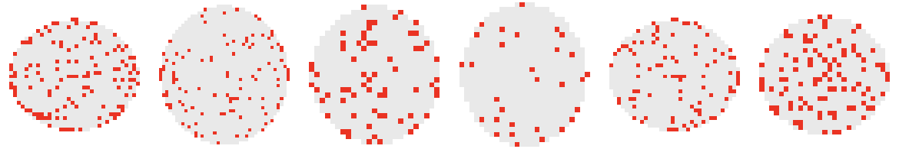
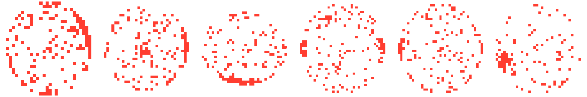
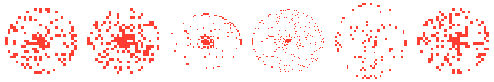
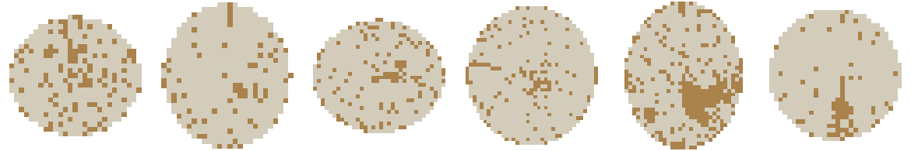
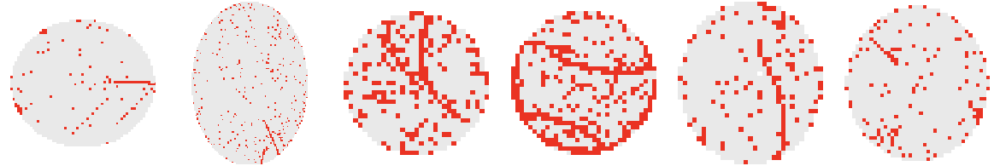
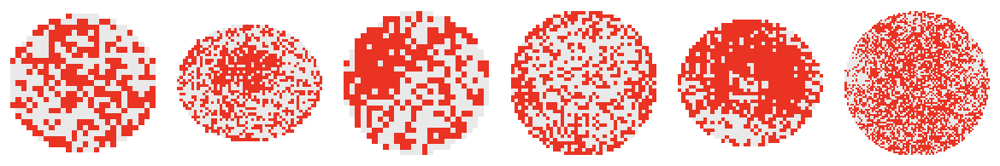
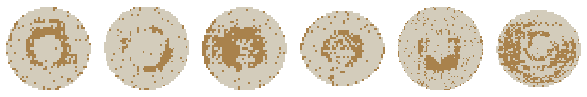
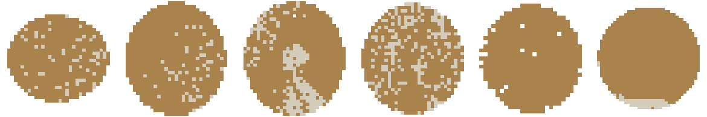

STEP 01 · INGEST
원본 구조 분해
Python 2 시절 생성된 pickle의 버전 호환 문제를 해결하고 811,457개 원본을 로드했습니다. 결측치와 타입을 정리한 뒤 9개 결함 라벨의 분포와 형상을 검증했습니다.
산출 — 81만 건 전처리 파이프라인과 결함 패턴 기준 정립
반도체 업계에 공개된 WM-811K 웨이퍼맵 데이터셋(811,457장)을 AI 도구(Claude Code)로 직접 로드·정제·시각화한 실습 기록입니다. 데이터 구조 파악부터 결함 패턴 분류, 시각화까지의 과정을 통해 공정·품질 데이터를 다루는 역량을 보여드리고자 합니다.
원본은 pandas DataFrame(pickle) 형태이며, 811,457행 × 6컬럼으로 구성됩니다. Python 2 시절(2019년)에 생성된 pickle이라 최신 pandas로 바로 열리지 않아, 모듈 경로 보정과 encoding='latin1' 옵션으로 로드했습니다.
| 컬럼 | 타입 | 설명 |
|---|---|---|
| waferMap | ndarray (uint8) | 웨이퍼 다이 배치를 담은 2D 배열. 웨이퍼마다 해상도가 다름 (예: 45×48, 26×26, 89×90 등) |
| dieSize | float64 | 웨이퍼 1장의 다이 개수. 평균 1,841개 (최소 3 ~ 최대 48,099) |
| lotName | str | 로트 이름. 고유 로트 46,293개 |
| waferIndex | float64 | 동일 로트 내 웨이퍼 순번 |
| trianTestLabel | ndarray(1,1) | Training / Test 데이터 분리 라벨. 라벨이 없는 행(NaN)이 638,507건 |
| failureType | ndarray(1,1) | 결함 패턴 라벨 (none 포함 9종). 라벨이 없는 행(NaN)이 638,507건 |
waferMap 배열의 각 셀은 0 / 1 / 2 세 가지 정수값만 가지며, 이 값이 곧 웨이퍼 상의 상태를 의미합니다. 아래 시각화에서는 값 2(불량 다이)를 강조색으로 표시해 한눈에 결함 위치를 알아볼 수 있게 했습니다.
다이가 존재하지 않는 배경. 웨이퍼가 원형이라 사각 배열의 모서리는 대부분 이 값입니다.
테스트를 통과한 정상 다이. 대부분의 웨이퍼에서 가장 넓은 면적을 차지합니다.
결함이 검출된 다이. 이 값들의 공간적 분포 패턴(중앙 집중, 링 모양, 스크래치 등)이 결함 유형을 결정합니다.
라벨이 있는 172,950건을 결함 패턴별로 분류한 결과입니다. 각 카드의 이미지는 실제 데이터에서 무작위로 뽑은 웨이퍼맵 샘플로, 옅은 색은 정상 다이, 진한 색은 불량 다이를 나타냅니다.

불량 다이가 전체에 드문드문 무작위로 분포. 공정 이상이 없는 정상 웨이퍼입니다.

웨이퍼 테두리 전체를 따라 얇은 링 모양으로 불량이 집중 발생. 엣지 공정 이상의 전형적 신호입니다.

가장자리의 특정 구간에만 불량이 국소적으로 뭉쳐서 발생합니다.

웨이퍼 중심부에 불량이 집중되는 패턴. 중심부 공정 조건 편차와 연관되는 경우가 많습니다.

웨이퍼 내부 임의 위치에 작은 클러스터 형태로 불량이 발생합니다.

선(스크래치) 형태로 불량이 사선·직선으로 이어짐. 물리적 접촉/핸들링 이슈를 시사합니다.

전체 면에 걸쳐 무작위·고밀도로 불량이 분포. 정상(none)보다 불량 밀도가 뚜렷하게 높습니다.

중앙을 비운 도넛(고리) 형태로 불량이 분포하는 패턴입니다.

웨이퍼 거의 전체가 불량으로 덮인 심각한 공정 이상 패턴. 발생 빈도는 가장 낮습니다.
라벨을 읽는 데서 멈추지 않고 새 지표를 계산하고, 공정 이상 원인을 좁힌 뒤 결함 유형을 자동 분류하는 순서로 분석 난이도를 높였습니다.
Python 2 시절 생성된 pickle의 버전 호환 문제를 해결하고 811,457개 원본을 로드했습니다. 결측치와 타입을 정리한 뒤 9개 결함 라벨의 분포와 형상을 검증했습니다.
웨이퍼맵의 양품·불량 다이를 직접 집계해 전체 수율을 새로 계산하고, 로트 단위 3-시그마 관리도로 관리 범위를 벗어난 이상 로트를 자동 탐지했습니다.
수율 이상 발생 시 설비·챔버별 성과를 비교하는 원인추적 절차를 재현했습니다. 정답을 심은 합성 메타데이터를 집계해 문제 챔버를 다시 찾아내는 방식으로 방법론을 검증했습니다.
라벨링된 45,519개 웨이퍼를 대상으로 이미지 크기를 통일하고 클래스 불균형을 다룬 뒤 Random Forest 분류 모델을 학습·평가했습니다.